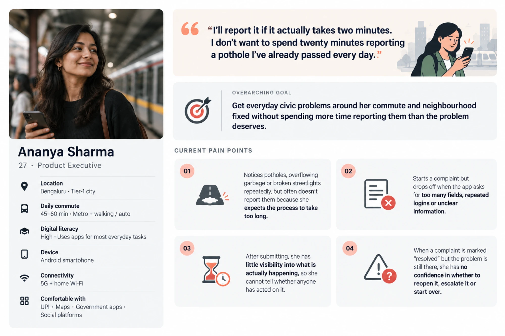
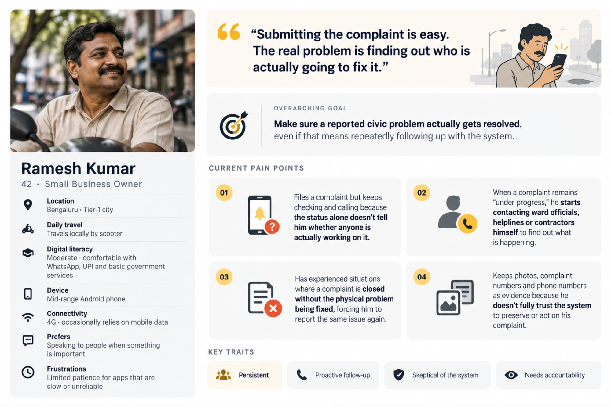
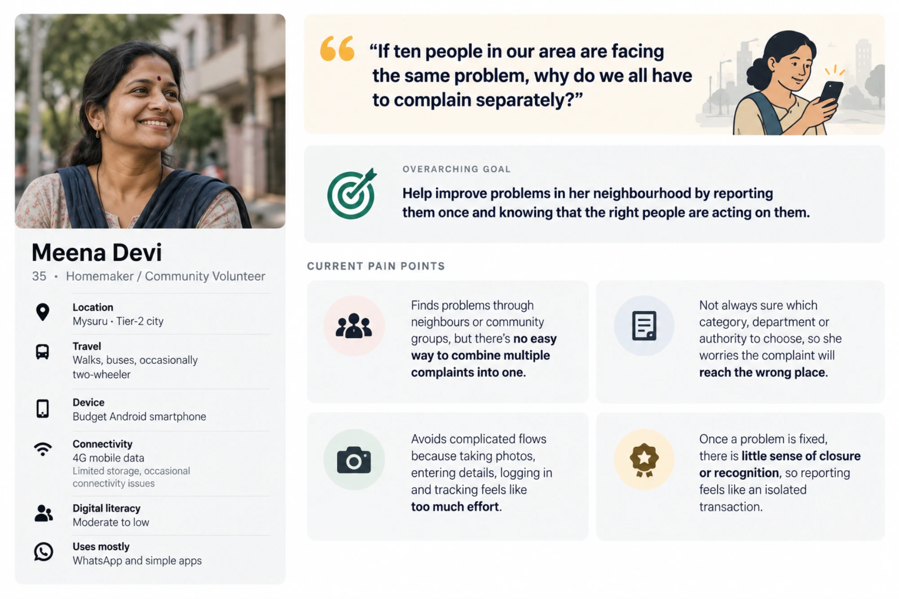

Every Indian city has a civic reporting app. The loop is open.
BBMP has one. BMC has one. Namma Yatri runs on the same premise. You see a pothole, you file a report, the municipality fixes it.
It doesn't work. Not because the apps are broken. Because the loop is open.
"The experience should empower citizens to report a public utility issue the moment they encounter it, and transparently track its progress through to resolution." — Namma Yatri Assignment Brief
Four days. One constraint: make it frictionless and trustworthy. Day one wasn't spent in Figma.
The thing we kept finding.
When I audited five civic apps, the resolution flow was identical. Citizen files. Official receives. Official marks closed. Citizen gets notified: Resolved.
The pothole is still there.
"It's all fake. MCD is closing complaints from the backend without any resolution or intimation. You cannot even reopen the ticket within 24 hours."
App Store review, Swachhata-MoHUAThat's not a UX problem. It's a data integrity problem. status = RESOLVED is set by the official, not the person who filed the complaint. No one verifies. No one closes the loop with evidence.
So citizens stop filing. The real metric isn't how many reports get submitted. It's how many get submitted again by the same person. Among users who've been disappointed once, that number is near zero. They don't come back.
The app didn't fail at the reporting step. It failed at resolution.
All five apps track the ticket. None of them track the problem.
Out of 8.4M downloads, most users have stopped filing
Not a verification mechanism. A checkbox.
Officers are incentivised to close tickets, not fix things. Any design that ignores this produces the same outcome as every app before it.
I didn't start with wireframes. That would have been the wrong instinct.
The first move was an audit: five apps, same task, timed. File a pothole complaint, track it to resolution, test what happens when the resolution is wrong. That took a week. The insight from it shaped everything after: the problem wasn't in the reporting step, it was in what happened after the official clicked close.
From there: define the users, map their current-state journeys, find where trust breaks. Then reframe. Then IA. Then flows. Then screens.
The discipline was staying in research long enough to earn the reframe. Jumping to flows before understanding why people abandon would have produced a prettier version of the same broken loop.
Information architecture
Five apps. One finding, repeated across all of them.
Before touching a wireframe, I looked at every major Indian civic app. Not just the descriptions but what users said actually happened to them.

MoHUA

My Street

UK

US

All five track the ticket. None of them track the problem. That's the gap.
Stage 6 doesn't exist anywhere. That's what we added.
Every civic app I looked at has five stages: Submission, Department Routing, Status Updates, Escalation, Closure by Official. They all have these five. They all stop here. The civic contract ends when the official says it does.
Stage 6: Citizen Confirmation. When an official marks a complaint closed, the original reporter gets a push notification. Not passive. Active. Was this actually fixed?
Every complaint passes through six stages: submission, geo-resolution, department routing, field assignment, field update, and citizen confirmation.
The fix is a data model extension: add citizen_verification_state, physical_resolution_confirmed, and reopen_count to the backend schema. The citizen becomes a participant in resolution, not just a recipient of a status update.
Three types. Same app, different orientations.
Three users. All three current-state journeys were mapped across five phases: Discover, Report, Submit, Wait, Resolution. All three end at the same phase: frustrated, abandoned.



The brief said "reporting." The real question was: whose job is it to say a problem is fixed?
Currently: the official's. Always. Exclusively.
How might we give citizens a way to confirm that a reported issue has actually been fixed in the physical world, without making that confirmation a burden?
That last clause matters. If verification becomes another obligation, adoption collapses. The design has to make it easy enough to do and optional enough not to punish non-response.
Two things mattered most: effortless for Ananya, and real resolution for Ramesh and Meena. Every screen decision ran through that filter.
Here's how I thought through the key calls.
Camera-first or category-first as the reporting entry point?
Map or list as the home screen's primary view?
Show only active issues, or resolved ones too?
What happens when the issue already has an open ticket?
Who gets to decide if an issue is actually resolved?
Built for a 45-year-old filing a complaint in direct sunlight.
The constraints were the brief. WCAG AA contrast at minimum, a 20–50 age range spanning low and high literacy, and deployment across every Android device in India. Albert Sans handles English; Noto Sans switches in for all other Indian languages. Filled icons everywhere. Labels on everything. Touch targets large enough to hit on a bumpy autorickshaw.
01234567
{(!@#$?&)}
SemiBold Bold
Report. Track. Verify.
Most apps stop at submission. I designed three flows because the trust problem lives after that.
Flow 01: Report
Open camera or pull from gallery. AI runs a duplicate check against open tickets within a 200m radius. If it's a duplicate, you're offered to add evidence to the existing report rather than file a new one. One path in. No friction.
Flow 02: Track
Pull up your open ticket. If it's overdue, a single tap escalates. No form, no rewrite. The escalation carries the original submission timestamp automatically. The delay is documented without the citizen having to argue it.
Flow 03: Verify
Push notification. View the official's closure note. Three-tap response: verified, partial, unresolved. Photo evidence optional for verified, required for disputed.
No response in 72 hours triggers a reminder. 48 hours after that, it auto-closes. The citizen can reopen within 7 days. That window is the accountability lever.
Four screens. Here's the thinking behind each one.
These four carry the most design thinking.
Home: the map with a resolved toggle
The map fills the top half. A heatmap overlay shows issue density: yellow to red for active issues, green gradient for resolved. A two-state toggle at the top switches between Active and Recently Resolved views. Below the map, a bottom sheet pulls up with the recent activity list and category filter chips.
Heat encoding follows universal conventions: yellow to red for active density, green gradient for resolved. Colour is never the only signal; status labels appear on every issue card.
Report: dual path entry
The Report tab opens to a large camera CTA with a "Choose Category" option below it. Camera triggers capture immediately. The system auto-detects the issue category and pre-fills the form. The user can override the detection before submitting. Gallery images require a valid geotag and timestamp in the metadata. Images without either get rejected with a plain-language explanation.
Ticket detail: status and timeline
The ticket detail shows the current status badge (Open, In Progress, Overdue, Resolved), the assigned officer's name when available, and a full chronological timeline of every update. Status uses both colour and label. When the issue goes overdue, "Escalate" and "Contact Support" appear at the bottom of the screen.
Verify resolution: the citizen's confirmation
The notification arrives. The ticket opens to before/after evidence from the field officer. Three choices, clearly labeled. Tapping "Still Unresolved" reopens the ticket, notifies the authority, and timestamps how long the issue has been open.
I couldn't design everything in four days. Here's what I chose, and why.
Must Have: V1
Citizen verification prompt triggered on official closure
Three-outcome response: verified, partial, unresolved
Photo evidence required only for disputes
Auto-close after 72 hours of no response
Should Have: V2
AI duplicate detection on submission, one-tap escalation with automatic timestamp documentation, push notification with enough context to respond without opening the app.
Could Have: V3+
Ward-level resolution dashboard visible to citizens, streak and history for power reporters like Ramesh, public status visibility so neighbours can upvote an existing ticket.
Won't Have: this cycle
Gamification or social sharing. Anonymous reporting — accountability flows in both directions; anonymous tickets are too easily dismissed.
The vanity metric for civic apps is reports filed.
Most apps measure how many complaints come in. That misses the point if the problems stay unfixed.
The number I care most about: complaints confirmed fixed by the person who filed them. Everything else tells me whether we're heading there.
Four things I'd do before this ships.
Test the verification flow with real users before assuming it works
The citizen verification step is the most consequential decision in this submission. I haven't tested it. I'd run five scenario-based interviews with Bengaluru residents, specifically around the "Still Unresolved" path. I need to know whether citizens feel comfortable pushing back against official resolutions, or whether social pressure makes them default to Approve.
Get backend engineering alignment on the schema extension
The current backend has status = RESOLVED. It needs citizen_verification_state, physical_resolution_confirmed, and reopen_count. The design is ready. The schema needs a decision.
Design the officer-side experience
I designed the citizen side. The officer app is where behaviour change actually happens. Without it, the verification loop is incomplete. That's a separate project with its own challenges.
Stress-test the heatmap on low-end devices and 2G connections
Heatmaps with live data are computationally expensive. The home screen needs a fallback state: a list-first view that activates when the map takes more than three seconds to load. I'd design and test that fallback before shipping to a market where mid-range Android and patchy connectivity are the norm.
What this actually attempts
This doesn't fix the municipality. It can't.
What it does is create an audit trail the system can't quietly close. An official who marks a complaint resolved now knows the citizen will be asked to confirm it. The confirmation, or the dispute, is on record.
That's accountability through visibility, not enforcement.
Closing the loop doesn't solve everything. But it's the one thing none of these apps have tried.